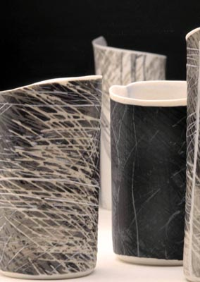
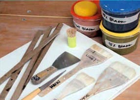
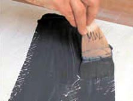
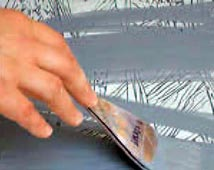
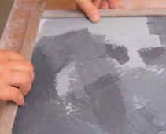
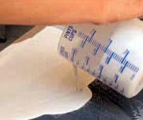
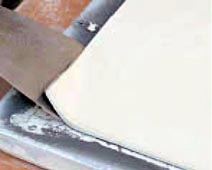
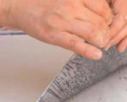
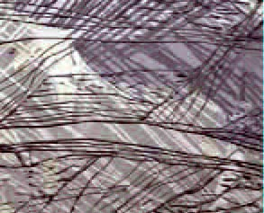
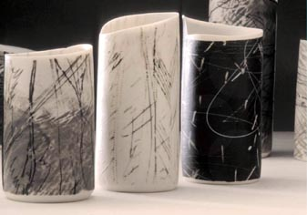

| Moments
in Black and White
Maiju Altpere-Woodhead discusses idea, process and materialisation.
Article origianlly published in
Ceramics
Technical, Issue #20.
Crossing
borders and making use of techniques from other mediums is by no
means new to ceramics. This practice of borrowing has for centuries
allowed makers to enrich their visual and technical vocabulary and
achieve new and exciting aesthetic results. Whether used for commercial
production or individual artistic expression, various methods of
classical printmaking have been part of ceramics since the advent
of printing itself.
I was first introduced to the possibilities of ceramic mono-printing
through the work of Norwegian artist Ole Lislerud, who has used
the technique to create monumental architectural artworks such as
the central portal in the Oslo Courthouse and the façade
of the Performing Arts Centre in Ålesund, Norway. While impressive
in scale and technical mastery, it is the successful match between
concept, aesthetic objectives and a technical process that has inspired
me most about Lislerud’s work. During a student exchange to
the National College of Art and Design in Oslo in 1997, I had an
opportunity to study under his guidance and, among other things,
learn the basic principles of this method. However, it was only
in 2004, when I started working on the Moments in Black and White
series and exploring issues around personal emotional responses
to various environments, that I returned to the mono-printing technique.

Ever since moving to Australia from Estonia in the Northern Hemisphere
in 1992, I have been intrigued by the ways recollections of other
places influence and inform one’s relationship with present
surrounds. As new impressions are embedded into the existing web
of sentiment and experience, the boundaries between past and present,
old and new become blurred. Familiarity is found or formed through
elusive associations with occurrences from the past and these associations
themselves change from context to context. Likewise, memories and
meanings are created and re-created, arranged and re-arranged in
a process with no finite beginning or end nor a set hierarchical
order.

The Moments in Black and White series is a materialised reflection
of personal meaning, making and memory processes. It consists of
an open-ended number of small cylindrical mono-printed porcelain
forms that can be assembled randomly or selectively, separating
and banding them together, swapping from group to group. I have
limited myself to a monochromatic black and white colour scheme
and a basic cylindrical form. Starting with these basics has allowed
me to gradually develop more complexity and diversity both in terms
of form and surface imagery while maintaining a sense of coherence
between individual pieces. While the diameter of the cylinders remains
more or less constant, their height and rims vary, creating movement
and visual rhythm in different assemblages. Likewise, the colour-palette
accommodates a wide range of subtle ‘colour greys’ that
result from both the make up of the coloured slips and variations
in firing atmosphere.

The method of mono-printing that I use combines elements of classical
intaglio printing and monotype. This combination has allowed me
to express the constant change and unpredictability of memories
as they move in and out of our consciousness, as well as involve
the element of familiarity. On the one hand it utilises the spontaneous
painterly qualities of monotype and its uniqueness among other printing
techniques as a means of producing only one print of an image. On
the other hand, it borrows from the classical intaglio techniques
in which the imagery is incised into the printing plate, resulting
in a print that replicates the graphic markings or textures of the
plate and has the potential of seriality.

For printing I use a number of plaster slabs that have been cast
on to glass or smooth melamine surface. The slabs are all the same
size (40 x 40 cm) and 2 cm thick. First I cover the even surface
of the slabs with incised linear designs. Any sharp metal implements
such as used fine ballpoint pens, the tip of a knife or saw blades
can be used for carving. Wiping the slab with a damp sponge changes
the definition and quality of the carved lines and makes the carving
easier as the plaster softens and is more responsive. Because of
the superbly sensitive nature of cast plaster, every alteration
to it becomes visible. However, as plaster is also soft, markings
will lose definition and even disappear with subsequent prints.
These clashing qualities make working with plaster slabs both challenging
and fascinating and I often keep using and rotating the same plaster
plates over and over again, sometimes way beyond their practical
use. Working the plates by altering or adding new markings to the
already existing and fading ones enables me to make a record of
change, as images appear, metamorphose and gradually disappear while
all along retaining traces of their former identity. Once the printed
images are exposed to the irreversibly transformative force of fire,
this record of change becomes permanent. After carving, the surface
needs to be cleaned thoroughly with a dry brush and damp sponge
to remove any fine plaster particles before applying clay slip.
I always discard the first cast from every new slab as it may contain
impurities such as soap scum or plaster dust, and let the plaster
dry completely. Before applying the first layer of clay slip, the
carved slab is wiped briefly with a damp sponge. Then, using a wide
soft flat brush, the entire surface of the slab is evenly covered
with a coloured slip. I usually work with a number of brushes and
keep those that I use for darker colours separate from the ones
for lighter colours. As soon as the slip has lost its sheen it can
be scraped off using a wide straight blade, leaving slip only in
the carved lines. Over this matrix of graphic markings I start applying
layers of coloured slips, scraping parts of them back much like
in classical monotype. It is a spontaneous and rather intuitive
process as I keep covering previous layers while working on the
composition from front to back. As the surface imagery is built
up layer by layer it also becomes an integral structural component
for the resulting forms, being embedded in their walls.

Once the composition is finished, four 2 cm wide and 3-4 mm thick
masonite strips are placed along the edges of the plaster slab.
These will hold the liquid slip in place while the backing slab
is being cast. To cast the backing slab I measure a required amount
of stirred casting slip into a pouring jug. While tilting the slab
with one hand I pour the slip on to the slab, starting from the
centre top and moving from side to side. Tilting the slab forces
the slip flow downwards and avoids ‘casting lines’ which
may cause cracking. Once the slab is covered to desired thickness,
it is placed on a level surface and the slip left to set. As soon
as the cast slip loses its sheen, the masonite strips are removed
and the slightly raised edges trimmed with a sharp knife. At this
point I need to work swiftly as the cast slab will lose plasticity
quickly and become unsuitable for further shaping. To release the
printed sheet, I first carefully lift the corners by easing them
from plaster with a thin flat blade. Holding gently but firmly from
two top corners, the cast porcelain slab is turned over on to a
clean board and the printed image revealed. While the entire process
is not complex there is always an element of accident and surprise
that, together with the changes that occur during firing, can alter
the original idea dramatically.

After removing the printed slab from the plaster, it is cut into
segments and shaped into cylinders of various heights. This fragmentation
of the printed image creates an aspect of continuation between individual
pieces and a sense of movement in the groupings of otherwise static
objects. The sense of extension is emphasised by the fact that I
reuse and rotate the plaster slabs and while each printed image
is different they share certain visual elements. The combination
of a painterly imagery superimposed with textured and defined graphic
markings resulting from this mono-printing technique allows for
the construction of complex yet undefined visual spaces with permeable
layered depth. While the surfaces of the printed forms in the Moments
in Black and White series can be read as a reference to landscape
or natural environment, it is not intended as literal representation
of any particular location. Rather, it is to act as a trigger for
various abstract associations with natural phenomena and cultural
expressions. The tactile contrast between the slightly raised relief
of the lines against the smooth satiny surface invites the viewer
to pick up the pieces, feel and examine them closely and then reposition
them, creating different compositions. It is through these personal
responses that the work gains new meanings, taking the original
idea to another level.
Maiju Altpere-Woodhead is a potter working in Canberra,
ACT. She has won awards for her work and exhibits regularly. Photographs
of finished work by Stuart Hay – ANU Photography. Demonstration
photographs by Britt Woodhead. The development of this article has
been assisted by the Australian Government through the Australia
Council, its arts funding and advisory body, as part of its Craft-in-site
initiative managed by Craft ACT.
Article © Ceramics
Art & Perception/Ceramics Technical.
More Articles
|